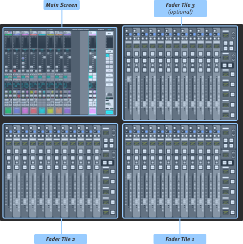
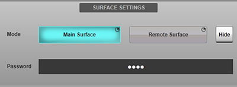
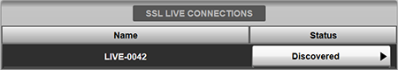
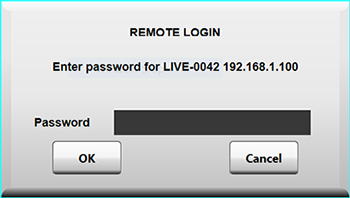
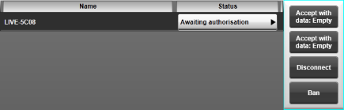
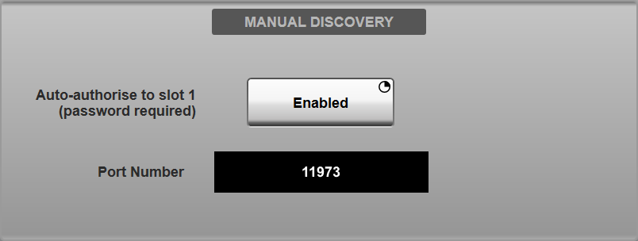
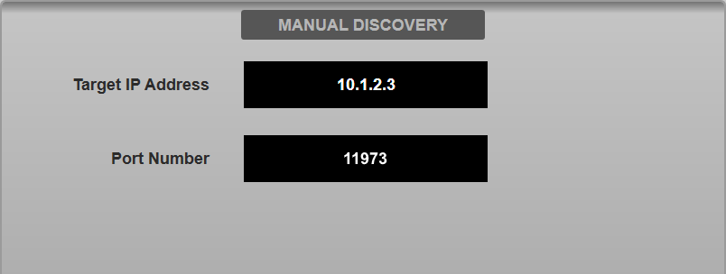

Remote Control from SOLSA PC software, other Consoles & Remote Expander
This section describes how to remote control the console over a network connection from a computer running SOLSA, another SSL Live console or from the Remote Expander. The Remote Tile connects to the console via USB and has a dedicated page here: Remote Tile.
Remote console control surfaces or computers running SOLSA may be connected to the main console over an Ethernet network to share its audio processing capabilities.
Up to 2 devices can remotely control the console at the same time.
The connection process is almost identical for SOLSA, another SSL Live console in "Remote Surface" mode and the Remote Expander.
SOLSA
SOLSA (SSL On/Off-line Setup Application) for PC provides an offline interface for users to prepare showfiles without a console. SOLSA can also be used online to remotely control any SSL Live console.
Another SSL Live Console in Remote Surface Mode
If more than one SSL Live console is available, consoles can be used to remotely control one another. This effectively expands the control surface of the console.
The Remote Expander
The Remote Expander is a dedicated remote surface for SSL Live.

Unlike other control surfaces in the Live range, the Remote Expander does not include any audio processing capability; it is purely a control surface for attaching to a Live console. The Remote Expander is available with either 24 or 36 faders, a main touch-screen and a VGA output for an external screen.
Connecting to the Console
On the console, go to MENU > Setup > Options > REMOTE tab.
Connecting using SOLSA
Ensure the console is set to Main Surface mode in the Surface Settings section. If not, press & hold the Main Surface button.

Choose a password and enter it in the Password field.
Connect the network port on your PC to one of the Network ports on the back of the console.
Alternatively, if connecting to the console wirelessly, connect a wireless access point to one of the Network ports on the console.
Now connect your PC to the wireless network.
Now check that the console's IP address is in the same subnet as the computer.
The console's IP settings are set in MENU > Setup > Options > Network tab.
Please see the Network Options section for more information.
Your PC's IP address is set in "Network and Internet" settings in Control Panel.
Open SOLSA.
In SOLSA, go to MENU > Setup > Options > Network tab and select an Adapter, either Wireless or select the Ethernet port that the console is plugged into on the PC. Close and reopen SOLSA if the adapter has been changed.
In SOLSA, go to MENU > Setup > Options > Remote tab.
Press and hold Remote Surface.
The SSL Live Connections area lists all consoles visible on the network. Locate the console you wish to connect to. Its default name will begin with "LIVE-" and can be changed in the console's System menu (MENU > Setup > System / Power > System tab).
The Status column lists the connection status of each console in the network. Tap the Discovered button and select Connect from the drop down list.

A flashing icon will appear on the console's status bar to indicate a pending connection.
Enter the password and press OK.

The remote's Status button will now display Waiting for server response.
On the console, press the Awaiting authorisation button and press one of the Connect to slot x buttons.

The connection will now be made.
Use the Disconnect button to decline the connection request.
Use the Ban button to decline the request and prevent the device requesting further access.
Once connected, both SSL Live Connections areas of the main console and SOLSA will show the other device as Connected OK and both status bars will show a icon.
To disconnect, press the Connected OK button and select Disconnect.
Connecting using another SSL Live console or the Remote Expander
Ensure the main console (the one processing the audio) is set to Main Surface mode in the Surface Settings section. If not, press & hold the Main Surface button.
Choose a password and enter it in the Password field.
Connect one of the Network ports on the back of the main console to one of the Network ports on the other console/Remote Expander.
Now check that the main console's IP address is in the same subnet as the other console/Remote Expander.
IP settings are set in MENU > Setup > Options > Network tab.
Please see the Network Options section for more information.
On the remote console/Remote Expander, go to MENU > Setup > Options > Remote tab.
Press and hold Remote Surface.
The SSL Live Connections area lists all main consoles visible on the network. Locate the console you wish to connect to. Its default name will begin with "LIVE-" and can be changed in the main console's System menu (MENU > Setup > System / Power > System tab).
The Status column lists the connection status of each console in the network. Tap the Discovered button and select Connect from the drop down list.
A flashing icon will appear on the main console's status bar to indicate a pending connection.
Enter the password and press OK.
The remote's Status button will now display Waiting for server response.
On the main console, press the Awaiting authorisation button and press one of the Connect to slot x buttons.
The connection will now be made.
Use the Disconnect button to decline the connection request.
Use the Ban button to decline the request and prevent the device requesting further access.
Once connected, both SSL Live Connections areas of the main console and remote will show the other device as Connected OK and both status bars will show a icon.
To disconnect, press the Connected OK button and select Disconnect.
Manual discovery of the console
Automatic detection of the console from a remote surface/SOLSA instance will not work across some networks, for example when using a Virtual Private Network (VPN) to connect the two endpoints over a Wide Area Network (WAN). The ability to manually enter the IP address of the main console into the remote surface allows a connection to be established even under these circumstances.
Follow the instructions above to prepare the remote surface for connection to the console. If the console is not detected by the remote surface when connected via a VPN, enter the IP address of the main console into the MANUAL DISCOVERY area of the remote surface's Remote options page (MENU > Setup > Options > REMOTE tab). The IP address of the console can be found in its Network options page (MENU > Setup > Options > NETWORK tab).
Ensure that the remote surface is set to use the correct network adapter in the remote surface's Network options page (MENU > Setup > Options > NETWORK tab). Changing the network adapter will necessitate a restart of the remote surface.
Enter a port number into the MANUAL DISCOVERY area of the main console's Remote options page (MENU > Setup > Options > REMOTE tab). The default port number is 11973. Enter the same port number into the MANUAL DISCOVERY area of the remote surface's Remote options page.
For example, using the default port number and a console IP address of 10.1.2.3 the options pages should look like this:
|
Main console:  |
Remote surface:  |
Continue with the instructions above to connect the remote surface to the console in the usual manner.
Alternatively, the remote surface can be auto-authorised to remote slot 1 on the main console, negating the need for manual intervention at the main console to authorise the connection (provided the correct password is entered). Press & hold the Enabled button in the MANUAL DISCOVERY area of the main console's Remote options page to engage this option.
Once connected, settings from the main console can be copied to the remote surface using the Remote Sync buttons in the main console's Layer Manager (Menu > Setup > Layer Manager). One Remote Sync button is included for each remote surface connected to the main console. These buttons will be disabled during synchronisation; if syncing two remote surfaces wait for one to complete before starting the other. These settings will be stored in the main showfile independently of the main console's settings. Note that updating the main console's settings will not update the remote surfaces unless the relevant Sync button is pressed again.
- The console does not provide any form of VPN functionality. A third-party VPN service may be required in order to establish a network link between two remote sites.
- This feature provides remote control of a console over a network connection; it does not include a means to transport audio between the console and the remote connection over the network. A third-party codec must be used for the audio transport in parallel with the control data connection.
- End-to-end network latency (e.g. as measured by pinging the console) should be <100 ms. Note this is the minimum latency of the control signal to/from the console and is not related to the latency of any audio sent between sites, which will be a function of the audio codec used.
- Remote connections must be made using a high bandwidth network connection; each remote surface requires up to 25 Mbps of data when connected to a console.
- This feature must be used with care. Operating a PA or monitoring system without being physically present carries risk as the engineer does not have direct and immediate acoustic awareness of the audio generated in the venue. SSL cannot be held responsible for any damage incurred to equipment or persons through use of this feature!
Scope of Remote Control
Note that certain areas of the console are not accessible by the remote surface. These include loading showfiles, changing the Console Configuration and powering off the console.
Certain elements are always controlled in 'parallel' from all control surfaces. These include any functions that affect the processing of audio, such as Solo, Mutes, bus routing, automation changes, FX etc.
Other items can be configured independently for each surface. These include:
- Fader Tile Layers and Banks
- Brightness settings
- External Screen selection
- Mouse & Touch settings
- Surface lock
- Other settings in the Console Options tab, such as console time and date and keyboard locale
- Meter ballistics (but not meter sources)
- All items in the Surface Options tab (Tile setup, Query and Follow modes)
- User Keys
Query operates on a per-surface basis, meaning that a path can be Queried on one surface without affecting the other. Or different paths can be Queried on two (or more) surfaces.
Surface network configuration and Automation GUI and Tile lock controls are also independent for each surface.
Useful Links
TaCo Tablet ControlRemote Options
Index and Glossary